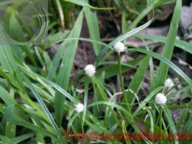

Tên khác
Tên dân gian: Cỏ bạc đầu, Cói bạc đầu lá ngắn, Cỏ đầu tròn, Bạc đầu lá ngắn, thủy ngô công, Pó dều dều
Tên khoa học: - Kyllinga nemoralis (Forst, et Forst.f.) Dandy ex Hutch, et Dalz. (K. monocephala Rottb)
Họ khoa học: thuộc họ Cói - Cyperaceae.
Cây cỏ bạc đầu
(Mô tả, hình ảnh cây cỏ bạc đầu, phân bố, thu hái, thành phần hóa học, tác dụng dược lý...)
Mô tả:

Bộ phận dùng:
Toàn cây - Herba Kyllingae Nemoralis.
Nơi sống và thu hái:
Loài cỏ nhiệt đới, phân bố ở Ấn Độ, Mianma, Trung Quốc, Campuchia, Xri Lanca, Inđônêxia, Oxtrâylia, Châu Phi, Châu Mỹ. Ở nước ta, cây mọc ở Lào Cai, Cao Bằng, Hà Nội, Ninh Bình, Thừa Thiên - Huế, Lâm Ðồng, thành phố Hồ Chí Minh, Tiền Giang, thường gặp ở vệ đường, trên các bãi hoang trong vườn.
Có thể thu hái toàn cây quanh năm.
Rửa sạch, dùng tươi hay phơi khô dùng dần.
Thành phần hóa học:
Toàn cây có mùi thơm, thơm nhất là rễ
Trong cây có tinh dầu. Hoạt chất chưa rõ.
Vị thuốc cỏ bạc đầu
(Công dụng, liều dùng, quy kinh, tính vị...)
Tính vị, tác dụng:
Cỏ bạc đầu có vị cay, tính bình, có tác dụng khu phong, giải biểu tiêu thũng, chỉ thống.
Làm thuốc người ta dùng cỏ bạc đầu làm thuốc sát
trùng, chữa sâu quảng, lở loét. Thường chỉ thấy dùng
ngoài: Cây hái về rửa sạch giã nát, thêm ít muối vào
đắp lên nơi sưng đau.
Có người dùng sắc uống chữa ỉa chảy. Ngày dùng
10-16g dưới dạng thuốc sắc
Công dụng, chỉ định và phối hợp:
Chữa Cảm mạo, uống làm cho ra mồ hôi.
Ho gà, viêm phế quản, viêm họng sưng đau.
Sốt rét, lỵ trực tràng, ỉa chảy;
Ðòn ngã tổn thương
Dùng ngoài trị rắn cắn, mụn nhọt, ngứa lở ngoài da, sâu quảng.
Liều dùng
Dùng 10-30g hay hơn, dạng thuốc sắc.
Dùng ngoài giã nát cây tươi đắp tại chỗ hoặc đun nước để rửa chỗ đau.
Còn làm thức ăn gia súc.
Ứng dụng lâm sàng của vị thuốc cỏ bạc đầu
Trị sốt rét với cỏ bạc đầu
Cỏ bạc đầu 60g sắc uống. Uống 4 giờ trước khi có triệu chứng sốt.
Trị ho gà, viêm khí quản, ho:
Dùng cỏ bạc đầu 60g, sắc nước và chia làm 2 lần uống trong ngày.
Ðái ra dưỡng chấp:
Dùng cỏ bạc đầu, cùi nhân (long nhãn) mỗi vị 50g, sắc nước uống.
Dùng ngăn, trị rắn cắn, mụn nhọt, viêm mủ da:
Liều dùng 30 – 60g, dạng thuốc sắc.
Dùng ngoài, giã cây ra đắp hoặc nấu nước rửa. Ở Malaysia, người ta dùng thân rễ làm thuốc đắp trị chân đau.
Trị viêm gan, vàng da truyền nhiễm
Cỏ đầu tròn: 40 – 80g sắc uống hàng ngày.
Tham khảo
Nơi mua bán vị thuốc Cỏ bạc đầu đạt chất lượng ở đâu?
Trước thực trạng thuốc đông dược kém chất lượng, nguồn gốc không rõ ràng,... xuất hiện tràn lan trên thị trường, làm ảnh hưởng tới hiệu quả điều trị cũng như ảnh hưởng tới sức khỏe của bệnh nhân. Việc lựa chọn những địa chỉ uy tín để mua thuốc đông dược là rất quan trọng và cần thiết. Vậy khách hàng có thể mua vị thuốc Cỏ bạc đầu ở đâu?
Cỏ bạc đầu là vị thuốc nam quý, được sử dụng rộng rãi trong YHCT. Hiện tại hầu hết các cửa hàng thuốc đông dược, phòng khám đông y, phòng chẩn trị YHCT... đều có bán vị thuốc này. Tuy nhiên người mua nên chọn những địa chỉ có uy tín, đảm bảo chất lượng, có giấy phép hoạt động để mua được vị thuốc đạt chất lượng.
Với mong muốn bệnh nhân được sử dụng những loại dược liệu đúng, chất lượng tốt, phòng khám Đông y Nguyễn Hữu Toàn không chỉ là đia chỉ khám chữa bệnh tin cậy, uy tín chất lượng mà còn cung cấp cho khách hàng những vị thuốc đông y (thuốc nam, thuốc bắc) đúng, chuẩn, đạt chuẩn chất lượng. Các vị thuốc có trong tiêu chuẩn Dược điển Việt Nam đều được nghành y tế kiểm nghiệm đạt chất lượng tiêu chuẩn.
Vị thuốc Cỏ bạc đầu được bán tại Phòng khám là thuốc đã được bào chế theo Tiêu chuẩn NHT.
Giá bán vị thuốc Cỏ bạc đầu tại Phòng khám Đông y Nguyễn Hữu Toàn: Gọi 18006834 để biết chi tiết
Tùy theo thời điểm giá bán có thể thay đổi.
+ Khách hàng có thể mua trực tiếp tại địa chỉ phòng khám: Cơ sở 1: Số 481 lô 22 Lê Hồng Phong, Phường Gia Viên, Thành phố Hải Phòng
+ Mua trực tuyến: Thuốc được chuyển qua đường bưu điện. Khi nhận được thuốc khách hàng thanh toán tiền COD.
Tag: cay co bac dau, vi thuoc co bac dau, cong dung co bac dau, Hinh anh cay co bac dau, Tac dung co bac dau, Thuoc nam
Thaythuoccuaban.com Tổng hợp
*************************